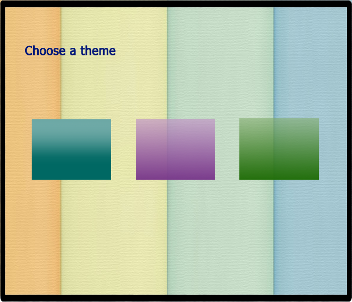
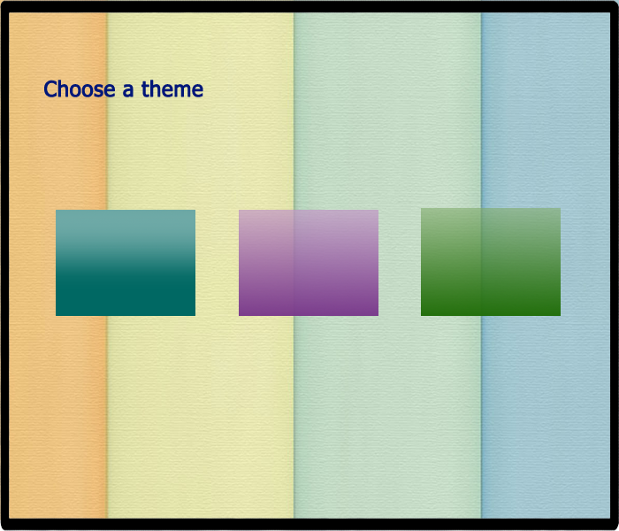
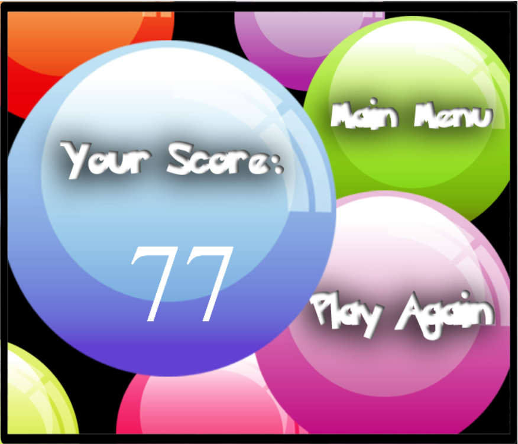
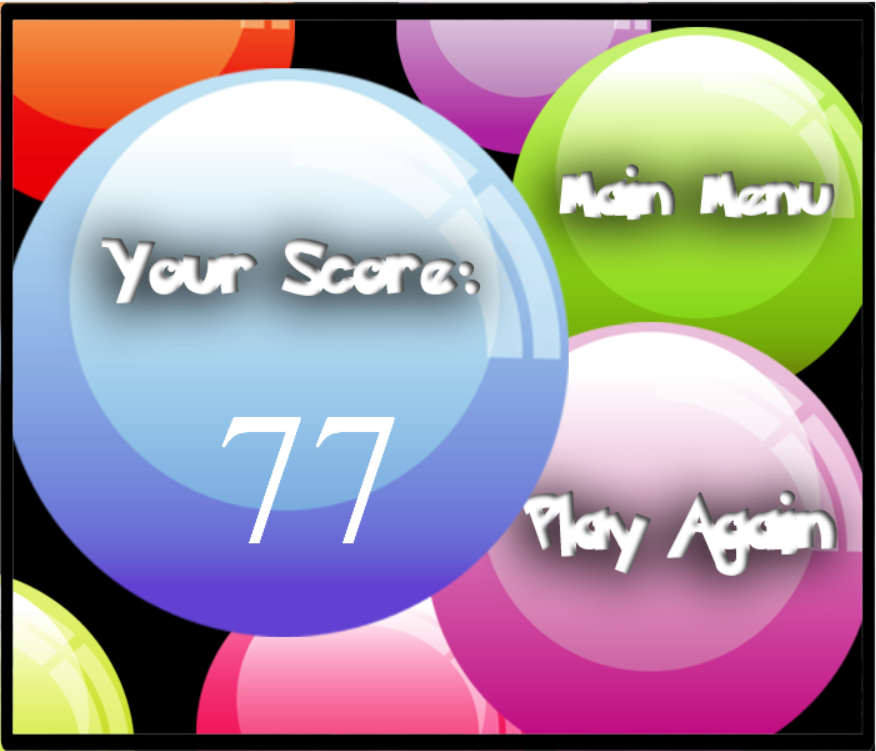

BubbleMania
A Tile-Matching Arcade Puzzle Video Game
Introduction
BubbleMania is a clone of the Puzzle Bobble video game from 1994. I wrote this game in Grade 11 using self-taught ActionScript3, and since this is a personal project, I have uploaded all source code on GitHub. Portal to the code is here. Below is also a short demo of the game I recorded:
Gameplay
At the start of each round, the top five rows of the playing arena is occupied by a prearranged pattern of colored bubbles. Down the center of the screen, there is a standalone bubble waiting to be launched. A player can click in a direction and the bubble will be shot upwards in a straight line following that direction. The task of the game is to clear the arena by forming groups of three or more like-colored bubbles, and to do that, the player must aim a new bubble towards a cluster of bubbles in the arena. The player has 2 minutes to clear all the bubbles without any bubbles crossing the bottom line.
 

 

Algorithm
Breadth First Search is used for detecting whether the new bubble is directly adjacent to any like-colored bubbles in the arena. There are five types of colored bubbles in BubbleMania: white, yellow, cyan, blue, and red. The entire playing arena is represented by a 2D array and the first five rows are initialized with a set of bubbles in randomly generated colors. All new bubbles that show up at the bottom of the screen are also randomly generated once a previous one is fired. When a new bubble is launched, keep track of its position (x and y coordinates) and map it to the corresponding entry in the 2D array. When it reaches an entry that is adjacent to one or more entries that are already occupied by a bubble, then this new bubble is snapped to the position of the nearest array entry using Euclidean distance. Finally, BFS is used to search all adjacent bubbles for matching colors. If a cluster of like-colored bubbles are identified, the entire cluster is “popped” and cleared from the screen.